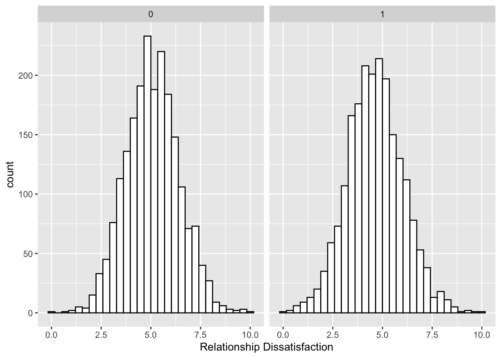
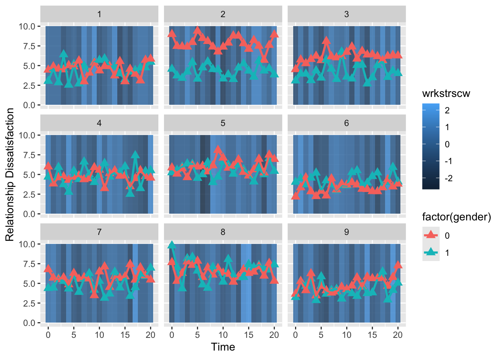
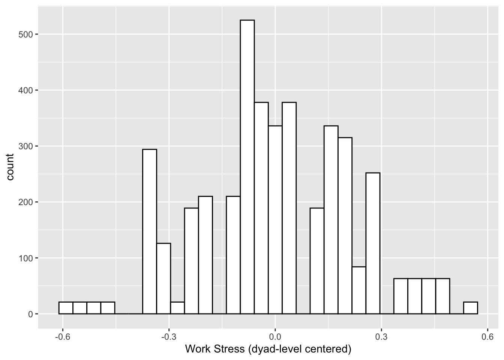

15.8 Data Example 2
The following data example is based on a tutorial written by Miriam Brinber and Nilam Ram. You can access the original tutorial at the following link:
15.8.1 Overview
Repeated measures data, often obtained from experience sampling or daily diary studies, require analytic methods that accommodate the inherent nesting in the data. One special case of repeated measures data are those from dyad (e.g., couples, parent/child). Dyadic data is structured such that repeated measures are nested within a person, and each person is nested within a dyad. The dyads are assumed to be independently sampled. Non-independece of the members of the dyad and across the repeated occasions are modeled explicitly. Multivariate multilevel modeling is one technique for effectively handling this type of data. Formal names for the dayad-specific model include Actor Partner Interdependence Model (APIM) (see Kenny, Kashy, & Cook, 2006).
In this tutorial, we will follow the example from Bolger and Laurenceau (2013) Chapter 8: Design and Analysis of Intensive Longitudinal Longitudinal Study of Distingiushable Dyads. Specifically, we will use the simulated dyadic process data set (p. 150). The data were simulated to represent 100 dual-career heterosexual couples where each partner provided diary reports twice daily over the course of 21 consecutive days. The first report is an end-of-workday report that includes (a) the number of stressors that occurred at work, and (b) work dissatisfaction. The data are complete and clean - with Bolger and Laurenceau’s goal being to “create a pedagologically uncomplicated data set.”
Note that we are using distinguishable dyads in this example. Distinguishability is typically determined conceptually, based upon a stable, differentiating characteristic (e.g., gender, age, role). Note that notions of “dyadic” can be generalized from persons to any reasonable combination of two variables (e.g., emotion and behavior). The next tutorial will illustrate application of the multivariate multilevel model for examination of intraindividual coupling.
15.8.2 Outline
- Introduction to the research questions, model, and data.
- Plotting the data.
- The multilevel model.
- Males only.
- Females only.
- The dyad.
- Cautions.
- Conclusion.
15.8.2.2 The Research Questions
We are going to address:
- Is the number of daily work stressors associated with end-of-day relationship satisfaction?
- What is the extent of association for the typical male partner and for the typical female partner (fixed effects)?
- Is there heterogeneity in the strength of the association across male partners in couples and across female partners in couples (random effects)?
Notice that, so far, the questions are stated separately for the two types of dyad members (males and females). The dyadic longitudinal model provides for another type of question - questions related to non-independence.
- Are dyad members’ relationship satisfaction on any given day related, after accounting for other explanatory variables?
Here, these relations manifest as correlations/covariances between intercepts, slopes, and residuals.
15.8.3 The Modeling Enterprise
The basic multilevel model is designed as a model with a univariate outcome. The ability to model multiple outcomes simultaneoulsy used to be a distinguishing feature of structural equation models (SEM). However, researches discovered that the multilevel model can be adapted for examination of multivariate outcomes quite easily. One simply has to “trick” the program into thinking that two (or more) variables are one variable.
15.8.4 The Data
The data are organized as follows:
There should be N (number of individuals) x measurement occasions rows per dyad in the data set. In this case, we should have a data set with 4,200 rows (100 dyads x 2 persons x 21 occasions).
Columns:
Couple ID
Person ID (e.g., 1 = partner 1, 2 = partner 2)
Time (e.g., day within the daily diary study)
Centered version of time (optional)
Gender (or whatever feature is distinguishing the dyad; in this case, 0 = male and 1 = female)
An indicator variable for each partner (e.g., husband, wife) - dichotomous (0/1)
Outcome variable (in this case, “reldis”)
Predictor variable (in this case, “wrkstrs”)
Centered version of the predictor variable (“wrkstrsc”)
Trait component of the predictor variable (“wrkstrsb”)
State component of the predictor variable (“wrkstrsw”)
for a total of 12 columns in this data set
The “trick” is to stack the data so that there are two records for each repeated observation. The data file is twice as long, and we structure the model to “turn on” and “turn off” the double records to invoke parameter estimation for each variable. Bolger & Laurenceau’s example data are already prepared data. Let’s take a look.
Here predictors are split into “trait” (between-person differences) and “state” (within-person deviations) components. Specifically, the daily variable stress is split into two varaibles: “wrkstrsb” is the sample-mean centered between-person component, and stress_state is the person-centered within-person component.
Load data and needed libraries.
#set filepath for data file
filepath <- "https://quantdev.ssri.psu.edu/sites/qdev/files/B%26Ldyads.csv"
#read in the .csv file using the url() function
dyads <- read.csv(file=url(filepath),header=TRUE)
# Look at the variable names
names(dyads)## [1] "coupleid" "personid" "time" "time7c" "gender" "female"
## [7] "male" "reldis" "wrkstrs" "wrkstrsc" "wrkstrscb" "wrkstrscw"# Re-ordering for easy viewing
dyads <- dyads[order(dyads$coupleid, dyads$time, dyads$personid),]
# Examine first few rows of the data set
head(dyads)## coupleid personid time time7c gender female male reldis wrkstrs wrkstrsc
## 1 1 1 0 -1.500000 1 1 0 3.03 3 0.0095238
## 22 1 2 0 -1.500000 0 0 1 4.46 3 0.0095238
## 2 1 1 1 -1.357143 1 1 0 4.62 3 0.0095238
## 23 1 2 1 -1.357143 0 0 1 4.88 3 0.0095238
## 3 1 1 2 -1.214286 1 1 0 2.85 3 0.0095238
## 24 1 2 2 -1.214286 0 0 1 4.58 3 0.0095238
## wrkstrscb wrkstrscw
## 1 -0.3238095 0.3333333
## 22 -0.1333333 0.1428571
## 2 -0.3238095 0.3333333
## 23 -0.1333333 0.1428571
## 3 -0.3238095 0.3333333
## 24 -0.1333333 0.142857115.8.5 Plotting the Data
Before we begin running our models, it is always a good idea to look at our data.
We start with examining the distribution of our outcome variable end-of-day relationship dissatisfaction, reldis. Let’s look at the histogram by gender.
ggplot(data = dyads, aes(x = reldis)) +
geom_histogram(fill = "white", color = "black") +
labs(x = "Relationship Dissatisfaction") +
facet_grid(. ~ gender) # creating a separate plot for each gender
The outcome variable for each gender looks approximately normally distributed, which is good news for when we run our models.
Next, let’s plot a few dyads’ reports of relationship dissatisfaction through the course of the study. Since the the predictor variable has already been split into time-varying (state) and time-invariant (trait) components, we use the time-varying predictor wrkstrscw as the “background” context variable.
ggplot(data = subset(dyads, coupleid <= 9), aes(x = time, group = personid), legend = FALSE) +
geom_rect(mapping = aes(xmin = time-.5, xmax = time+.5, ymin = 0, ymax = 10, fill = wrkstrscw), alpha = 0.6) + # creating rectangles in the background of the plot colored by work stressors
geom_point(aes(x = time, y = reldis, color = factor(gender)), shape = 17, size = 3) + # creating a different colored point for each gender
geom_line(aes(x = time, y = reldis, color = factor(gender)), lty = 1, size=1) + # creating a different colored line for each gender
xlab("Time") +
ylab("Relationship Dissatisfaction") + ylim(0, 10) +
scale_x_continuous(breaks=seq(0, 20, by = 5)) +
facet_wrap( ~ coupleid) # creating a separate plot for each dyad
It looks like there is quite a lot of day-to-day variability!
Finally, we’ll examine a histogram of the dyad-level (between-dyad) time-invariant variable is wrkstrscb
ggplot(data = dyads, aes(x = wrkstrscb)) +
geom_histogram(fill = "white", color = "black") +
labs(x = "Work Stress (dyad-level centered)")
15.8.6 The Multilevel Model
We are now ready to start running our models.
First, we’ll construct a model looking at the within-person and between-person associations of relationship dissatisfaction (reldis) with work stressors (wrkstrs - which is centered and separated into wrkstrscw and wrkdstrscb).
This multilevel model set-up proceeds as usual; however, we will include a special “dummy” variable indicator as follows:
\[reldis_{it} = \beta_{0i}dummy_{it} + \beta_{1i}dummy_{it}time7c_{it}+ \beta_{2i}dummy_{it}wrkstrscw_{it} + e_{it}\]
with two random effects, so that \[\beta_{0i} = \gamma_{00} + \gamma_{01}wrkstrscb_{i} + u_{0i}\]
\[\beta_{1i} = \gamma_{10}\]
\[\beta_{2i} = \gamma_{20} + u_{2i}\]
and residual structures of where \[e_{it} \sim \mathcal{N}(0,\mathbf{R})\], and \[\mathbf{U_{i}} \sim \mathcal{N}(0,\mathbf{G})\].
where \[\mathbf{R} = \mathbf{I} \left[\begin{array} {r} \sigma^2_{e} \end{array}\right]\]
, which with the auto-regressive structure becomes \[\mathbf{R} = \sigma^2 \left[\begin{array} {rrrr} 1 & \phi & \phi^2 & \cdots & \phi^{T-1} \\ \phi & 1 & \phi & \cdots & \phi^{T-2} \\ \phi^2 & \phi & 1 & \cdots & \phi^{T-3} \\ \vdots & \vdots & \vdots & \ddots & \vdots \\ \phi^{T-1} & \phi^{T-2} & \phi^{T-3} & \cdots & 1 \end{array}\right]\]
and the between-person residuals structure is \[\mathbf{G} = \left[\begin{array} {rr} \sigma^{2}_{u0} & \sigma_{u0u2} \\ \sigma_{u2u0} & \sigma^{2}_{u2} \end{array}\right]\]
Writing out the long equation (after algebraic substitution) we have
\[ reldis_{it} = \\ \gamma_{00}dummy_{it} + \gamma_{10}dummy_{it}time7c_{it}+ \gamma_{20}dummy_{it}wrkstrscw_{it} + \gamma_{01}dummy_{it}wrkstrscb_{i} + \\ \left[ u_{0i}dummy_{it} + u_{2i}dummy_{it}wrkstrscw_{it} + e_{it} \right] \]
which then is the equation that maps to the lme() or lmer() code.
15.8.7 Fit Male Model
First, we run the model for just males. Although not necessary, we use the \(dummy_{it}\) variable male.
Note also the coding to remove the default intercept ~ -1 ... and for direct specification of interaction terms using colon x:z This is important. We are tricking the program, so we have to be very specific about what we want.
model0male <- lme(fixed = reldis ~ -1 + male + male:time7c +
male:wrkstrscw + male:wrkstrscb,
random = ~ -1 + male + male:wrkstrscw | coupleid,
correlation = corAR1(), # specifying an lag-1 autoregressive residual structure
data = dyads[which(dyads$gender == 0),], # subsetting to just male
control = list(maxIter = 1000))
summary(model0male)## Linear mixed-effects model fit by REML
## Data: dyads[which(dyads$gender == 0), ]
## AIC BIC logLik
## 5806.776 5857.606 -2894.388
##
## Random effects:
## Formula: ~-1 + male + male:wrkstrscw | coupleid
## Structure: General positive-definite, Log-Cholesky parametrization
## StdDev Corr
## male 1.0152924 male
## male:wrkstrscw 0.1703982 0.188
## Residual 0.8726433
##
## Correlation Structure: AR(1)
## Formula: ~1 | coupleid
## Parameter estimate(s):
## Phi
## 0.01691436
## Fixed effects: reldis ~ -1 + male + male:time7c + male:wrkstrscw + male:wrkstrscb
## Value Std.Error DF t-value p-value
## male 5.083091 0.1038703 1998 48.93689 0.0000
## male:time7c 0.011701 0.0225726 1998 0.51835 0.6043
## male:wrkstrscw 0.109507 0.0257084 1998 4.25958 0.0000
## male:wrkstrscb -0.027946 0.4552738 98 -0.06138 0.9512
## Correlation:
## male ml:tm7 ml:wrkstrscw
## male:time7c 0.015
## male:wrkstrscw 0.122 -0.004
## male:wrkstrscb -0.098 0.002 -0.004
##
## Standardized Within-Group Residuals:
## Min Q1 Med Q3 Max
## -3.374483094 -0.641886673 0.001625504 0.648554761 3.000192640
##
## Number of Observations: 2100
## Number of Groups: 100We see that the average relationship dissatisfaction for males was 5.08.
There were significant “state” effects, such that on days when a man had one more work stressor than usual, his relationship dissatisfaction increased by 0.11 points. There were no significant trends with time or significant “trait” level effects.
15.8.8 Fit Female Model
Second, we run the model for just females, with the \(dummy_{it}\) variable female.
model0female <- lme(fixed = reldis ~ -1 + female + female:time7c +
female:wrkstrscw + female:wrkstrscb,
random = ~ -1 + female + female:wrkstrscw | coupleid,
correlation=corAR1(), # specifying an lag-1 autoregressive residual structure
data=dyads[which(dyads$gender == 1),], # subsetting to just female
control=list(maxIter=1000))
summary(model0female)## Linear mixed-effects model fit by REML
## Data: dyads[which(dyads$gender == 1), ]
## AIC BIC logLik
## 6303.436 6354.266 -3142.718
##
## Random effects:
## Formula: ~-1 + female + female:wrkstrscw | coupleid
## Structure: General positive-definite, Log-Cholesky parametrization
## StdDev Corr
## female 0.9613730 female
## female:wrkstrscw 0.1271923 0.481
## Residual 0.9978968
##
## Correlation Structure: AR(1)
## Formula: ~1 | coupleid
## Parameter estimate(s):
## Phi
## 0.002610473
## Fixed effects: reldis ~ -1 + female + female:time7c + female:wrkstrscw + female:wrkstrscb
## Value Std.Error DF t-value p-value
## female 4.650787 0.0991035 1998 46.92859 0.0000
## female:time7c -0.023380 0.0253670 1998 -0.92168 0.3568
## female:wrkstrscw 0.158532 0.0253158 1998 6.26216 0.0000
## female:wrkstrscb 0.762574 0.4453133 98 1.71244 0.0900
## Correlation:
## female fml:t7 fml:wrkstrscw
## female:time7c 0.018
## female:wrkstrscw 0.234 -0.014
## female:wrkstrscb 0.101 -0.001 -0.003
##
## Standardized Within-Group Residuals:
## Min Q1 Med Q3 Max
## -3.256748607 -0.648814249 -0.008317617 0.650836521 3.379549731
##
## Number of Observations: 2100
## Number of Groups: 100We see that the average relationship dissatisfaction for females was 4.65. There were significant “state” effects, such that on days when a woman had one more work stressor than usual, her relationship dissatisfaction increased by 0.16 points. There were no significant trends with time or significant “trait” level effects.
15.8.9 Fit Full Model
As above, we use the two dummy variables to turn on and off the parameters. The parameters invoked with \(dummy1\) are associated with one member of the dyad, and parameters invoked with \(dummy2\) are associated with the other member of the dyad.
\[reldis_{it} = \\ \gamma_{00}dummy1_{it} + \gamma_{10}dummy1_{it}time7c_{it}+ \gamma_{20}dummy1_{it}wrkstrscw_{it} + \gamma_{01}dummy1_{it}wrkstrscb_{i} + \left[ u_{0i}dummy1_{it} + u_{2i}dummy1_{it}wrkstrscw_{it} + e1_{it} \right] + \\ \gamma_{30}dummy2_{it} + \gamma_{40}dummy2_{it}time7c_{it}+ \gamma_{50}dummy2_{it}wrkstrscw_{it} + \gamma_{31}dummy2_{it}wrkstrscb_{i} + \left[ u_{3i}dummy2_{it} + u_{5i}dummy2_{it}wrkstrscw_{it} + e2_{it} \right]\]
Noting that our random effect matrices also expand, \[\mathbf{R} = \left[\begin{array} {rr} \sigma^2_{e1} & \sigma_{e1e2} \\ \sigma_{e1e2} & \sigma^2_{e2} \end{array}\right]\]
where \(\sigma_{e1e2}\) is the residual covariance between male and female relationship dissatisfaction.
and
\[\left[\begin{array}
{rrrr}
\sigma^{2}_{u0} & \sigma_{u0u2} & \sigma_{u0u3} & \sigma_{u0u5} \\
\sigma_{u2u0} & \sigma^{2}_{u2} & \sigma_{u2u3} & \sigma_{u2u5} \\
\sigma_{u3u0} & \sigma_{u3u2} & \sigma^{2}_{u3} & \sigma_{u3u5} \\
\sigma_{u5u0} & \sigma_{u5u2} & \sigma_{u5u3} & \sigma^{2}_{u5}
\end{array}\right]\]
where the matrix is blocks of between-dyad associations, some among males only, some among females anly, and some across genders. These are sample-level, between-dyad relations, and should be interpreted appropriately.
model1 <- lme(
fixed = reldis ~ -1 +
male +
male:time7c +
male:wrkstrscw + male:wrkstrscb +
female + female:time7c +
female:wrkstrscw + female:wrkstrscb,
random = ~ -1 + male +
male:wrkstrscw +
female + female:wrkstrscw | coupleid,
# this invokes separate sigma^{2}_{e} for each gender
weights=varIdent(form = ~1 | gender),
# this invokes the off-diaginal sigma_{e1e2}
corr=corCompSymm(form = ~1 | coupleid/time),
data=dyads,
control=list(maxIter=1000)
)
summary(model1)## Linear mixed-effects model fit by REML
## Data: dyads
## AIC BIC logLik
## 12096.16 12229.31 -6027.078
##
## Random effects:
## Formula: ~-1 + male + male:wrkstrscw + female + female:wrkstrscw | coupleid
## Structure: General positive-definite, Log-Cholesky parametrization
## StdDev Corr
## male 1.0157900 male female ml:wrk
## female 0.9600387 0.263
## male:wrkstrscw 0.1678971 0.178 -0.019
## wrkstrscw:female 0.1250153 0.007 0.485 0.502
## Residual 0.9981032
##
## Correlation Structure: Compound symmetry
## Formula: ~1 | coupleid/time
## Parameter estimate(s):
## Rho
## 0.07320601
## Variance function:
## Structure: Different standard deviations per stratum
## Formula: ~1 | gender
## Parameter estimates:
## 1 0
## 1.0000000 0.8738249
## Fixed effects: reldis ~ -1 + male + male:time7c + male:wrkstrscw + male:wrkstrscb + female + female:time7c + female:wrkstrscw + female:wrkstrscb
## Value Std.Error DF t-value p-value
## male 5.085720 0.1038241 4093 48.98398 0.0000
## female 4.647561 0.0989240 4093 46.98110 0.0000
## male:time7c 0.011615 0.0222292 4093 0.52251 0.6013
## male:wrkstrscw 0.109399 0.0255078 4093 4.28883 0.0000
## male:wrkstrscb -0.141908 0.4388421 4093 -0.32337 0.7464
## time7c:female -0.024921 0.0252925 4093 -0.98532 0.3245
## wrkstrscw:female 0.159484 0.0251352 4093 6.34506 0.0000
## wrkstrscb:female 0.623309 0.4276923 4093 1.45738 0.1451
## Correlation:
## male female ml:tm7 ml:wrkstrscw ml:wrkstrscb tm7c:f
## female 0.253
## male:time7c 0.015 0.001
## male:wrkstrscw 0.115 -0.012 -0.004
## male:wrkstrscb -0.095 -0.003 0.002 -0.004
## time7c:female 0.001 0.018 0.071 -0.001 0.001
## wrkstrscw:female 0.003 0.234 0.001 0.163 0.001 -0.014
## wrkstrscb:female 0.003 0.097 0.000 0.001 -0.029 -0.002
## wrkstrscw:
## female
## male:time7c
## male:wrkstrscw
## male:wrkstrscb
## time7c:female
## wrkstrscw:female
## wrkstrscb:female -0.004
##
## Standardized Within-Group Residuals:
## Min Q1 Med Q3 Max
## -3.3784810728 -0.6500707319 0.0004811467 0.6500963650 3.3326678370
##
## Number of Observations: 4200
## Number of Groups: 100Note that the residual structure is not quite the same as in Bolger & Laurenceau (2013). It is not clear exactly how to get lme() structure to match. There is not a straightforward way, but it seems like it is possible. We just haven’t found the exact combination of structures to use yet.
But, here is another close variant.
model2 <- lme(fixed = reldis ~ -1 +
male + male:time7c +
male:wrkstrscw + male:wrkstrscb +
female + female:time7c +
female:wrkstrscw + female:wrkstrscb,
random = ~ -1 +
male + male:wrkstrscw +
female + female:wrkstrscw | coupleid,
weights=varIdent(form = ~1 | gender), # this invokes separate sigma^{2}_{e} for each gender
corr=corAR1(form = ~1 | coupleid/gender/time), # this invokes an AR structure
data=dyads,
control=list(maxIter=1000))
summary(model2)## Linear mixed-effects model fit by REML
## Data: dyads
## AIC BIC logLik
## 12106.53 12239.69 -6032.266
##
## Random effects:
## Formula: ~-1 + male + male:wrkstrscw + female + female:wrkstrscw | coupleid
## Structure: General positive-definite, Log-Cholesky parametrization
## StdDev Corr
## male 1.0157826 male female ml:wrk
## female 0.9600367 0.267
## male:wrkstrscw 0.1675384 0.191 -0.004
## wrkstrscw:female 0.1287722 0.012 0.470 0.506
## Residual 0.8722334
##
## Correlation Structure: AR(1)
## Formula: ~1 | coupleid/gender/time
## Parameter estimate(s):
## Phi
## 0
## Variance function:
## Structure: Different standard deviations per stratum
## Formula: ~1 | gender
## Parameter estimates:
## 0 1
## 1.000000 1.143872
## Fixed effects: reldis ~ -1 + male + male:time7c + male:wrkstrscw + male:wrkstrscb + female + female:time7c + female:wrkstrscw + female:wrkstrscb
## Value Std.Error DF t-value p-value
## male 5.085736 0.1038230 4093 48.98468 0.0000
## female 4.647385 0.0989235 4093 46.97960 0.0000
## male:time7c 0.011710 0.0222300 4093 0.52678 0.5984
## male:wrkstrscw 0.108935 0.0255201 4093 4.26858 0.0000
## male:wrkstrscb -0.142334 0.4385224 4093 -0.32458 0.7455
## time7c:female -0.024775 0.0252913 4093 -0.97960 0.3273
## wrkstrscw:female 0.160824 0.0253763 4093 6.33757 0.0000
## wrkstrscb:female 0.614992 0.4283572 4093 1.43570 0.1512
## Correlation:
## male female ml:tm7 ml:wrkstrscw ml:wrkstrscb tm7c:f
## female 0.253
## male:time7c 0.015 0.000
## male:wrkstrscw 0.123 -0.002 -0.004
## male:wrkstrscb -0.095 -0.003 0.002 -0.005
## time7c:female 0.000 0.018 -0.001 -0.001 0.001
## wrkstrscw:female 0.006 0.231 0.001 0.168 0.001 -0.014
## wrkstrscb:female 0.003 0.097 0.000 0.001 -0.029 -0.001
## wrkstrscw:
## female
## male:time7c
## male:wrkstrscw
## male:wrkstrscb
## time7c:female
## wrkstrscw:female
## wrkstrscb:female -0.003
##
## Standardized Within-Group Residuals:
## Min Q1 Med Q3 Max
## -3.379097672 -0.647627755 0.001645523 0.654334289 3.321512474
##
## Number of Observations: 4200
## Number of Groups: 100Although the structure is not exactly matched to the example in the book, the ones we are fitting are among the structures used in the literature. Across variants, the interpretations do not change in meaningful ways, suggesting that looking across the range of possibilities is fine.
15.8.9.1 Brief Interpretation.
The results for the dyadic model are similar to when the models for males and females were run separately; however, this will not always be the case.
Fixed effects: On an average day, males and females relationship dissatisfaction is 5.08 and 4.65, respectively, on a 0 to 10 scale. On days when there is an additional work stressor that usual, relationship dissatisfaction increases by 0.11 and 0.16 for males and females, respectively.
Random effects: The deviation around males and females average relationship dissatisfaction is 1.02 and 0.96, respectively. Additionally, males and females relationship dissatisfaction reports are correlated 0.27, indicating that members of the same dyad often have relatively similar reports of relationship dissatisfaction. The deviation around males and females reactivity to work stressors (i.e., slope of work stressors) is 0.17 and 0.13, respectively. The way in which dyad members’ relationship dissatisfaction changes in response to work stressors is quite similar, as indicated by the 0.51 correlation.
A more thorough interpretation and formal write-up of the results can be found on pages 165 - 171 of Bolger and Laurenceau (2013) Chapter 8: Design and Analysis of Intensive Longitudinal Longitudinal Study of Distingiushable Dyads.
15.8.9.2 Cautions
While we only provide a brief description of the multivariate multilevel model for repeated measures dyadic data, we want to a highlight a few consierations when using this model.
- The model used here is for distinguishable dyads. The persons within each dyad are separated (and pooled) according to an a priori defined feature (e.g., gender, role).
- The model used here examined the linear association between work stressors and relationship dissatisfaction. Different formualtions are needed to test for non-linear relations.
- Mdel inferences should be done carefully, keeping in mind that that level 2 covariances are between-individual covariances.
15.8.10 Conclusion
This tutorial is meant to accompany the example provided in Chapter 8: Design and Analysis of Intensive Longitudinal Longitudinal Study of Distingiushable Dyads of Bolger and Laurenceau (2013). We provided brief explanation of (1) the underlying model, (2) the code to run these models in R, and (3) the interpretation of the results. More detailed information about these (and related analyses) can be found in Bolger and Laurenceau (2013), Laurenceau and Bolger (2005), and Kenny, Kashy, and Cook (2006).